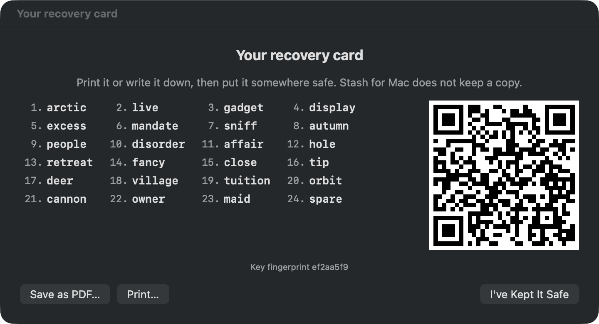
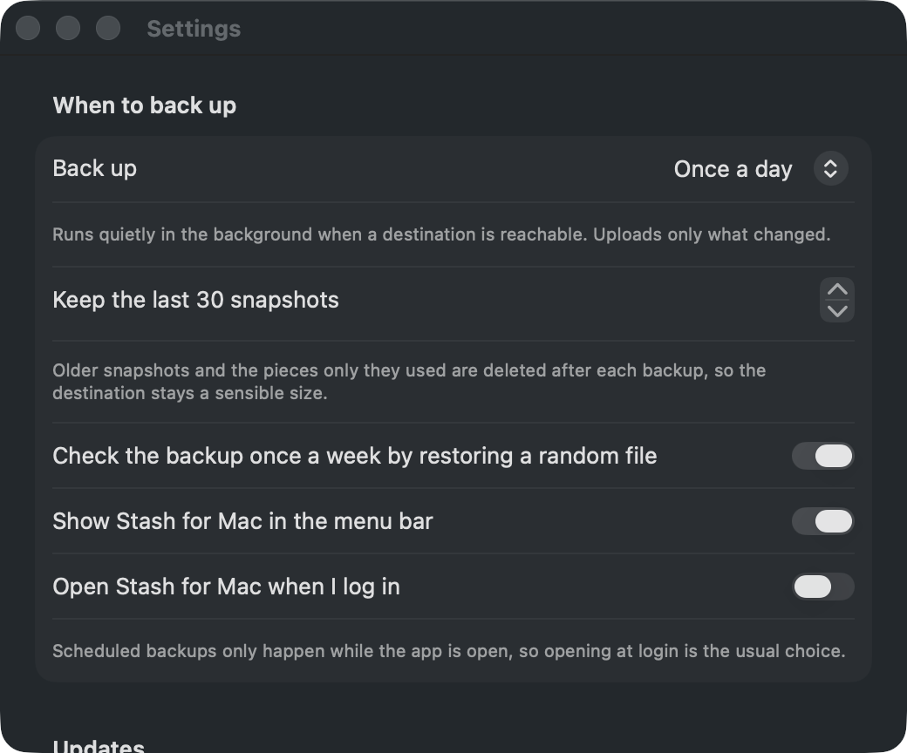

The idea
You already pay for storage: the Google Drive that comes with Gmail, the OneDrive that comes with Microsoft 365, iCloud, Dropbox. Stash for Mac backs up the folders you care about into it, scrambled on your Mac first, so the provider only ever holds blobs it cannot read. You hold the key, as 24 words and a QR code on a card.
- Nothing readable leaves the Mac. Every piece is encrypted with ChaChaPoly and named by a keyed hash. The provider learns sizes and timing, nothing else.
- No password, no account. The app makes a random key and shows it once on a printable card. A typo is caught by a checksum; a photo of the card restores everything on a new Mac.
- A backup you can check. Every week it restores a random file to prove the path works, and tells you in plain words.
- Never downloads behind your back. Files that only exist in the cloud are listed, not fetched.
What it does
Any folder is a destination
iCloud Drive, Google Drive, OneDrive and Dropbox all appear as folders through their own apps, so there are no API keys and nothing to sign up for. External disks and NAS too.
Only what changed
Files are split into 4 MB pieces and stored once. A second backup of an unchanged folder uploads nothing.
Snapshots that age out
Keep the last 30. Pieces nobody references are deleted, so a free tier stays free.
Restore anything
A file, a folder, or everything, from any snapshot, to a place you choose. A damaged piece fails that one file and nothing partial is written.
Runs itself
Hourly or daily while the app is open, only to destinations that are reachable, with a menu bar item and a notification only when something needs you.
A real command line
stashmac with --json everywhere, exit codes, scriptable restores.


Compared
| Stash for Mac | Arq | Backblaze | Time Machine | |
|---|---|---|---|---|
| Uses storage you already have | Yes | Yes | No, its own | Local disk |
| Encrypted before upload, key only with you | Yes | Yes | Optional | Optional |
| Recovery card, no password to forget | Yes | Password | Password | Password |
| Weekly automatic restore test | Yes | No | No | No |
| Open source | MIT | No | No | No |
| Price | Free | $50 + storage | Subscription | Free, needs a disk |
From each product's public documentation at the time of writing; corrections welcome.
Honest limits
Free tiers are small: 15 GB with Google (shared with Gmail), 5 GB OneDrive, 5 GB iCloud. This is for the documents and photos that matter, not a full-disk clone. Upload speed is the provider's. If the account is lost, so is that copy, which is why the app nags for a second destination. And if the card is lost with the Mac, nobody can read the backup, including you.
Install
# download the DMG from the releases page, drag to Applications, open, make a key # or build it yourself, no Xcode needed: git clone https://github.com/keithadler/stashmac && cd stashmac && ./build-app.sh --install --run